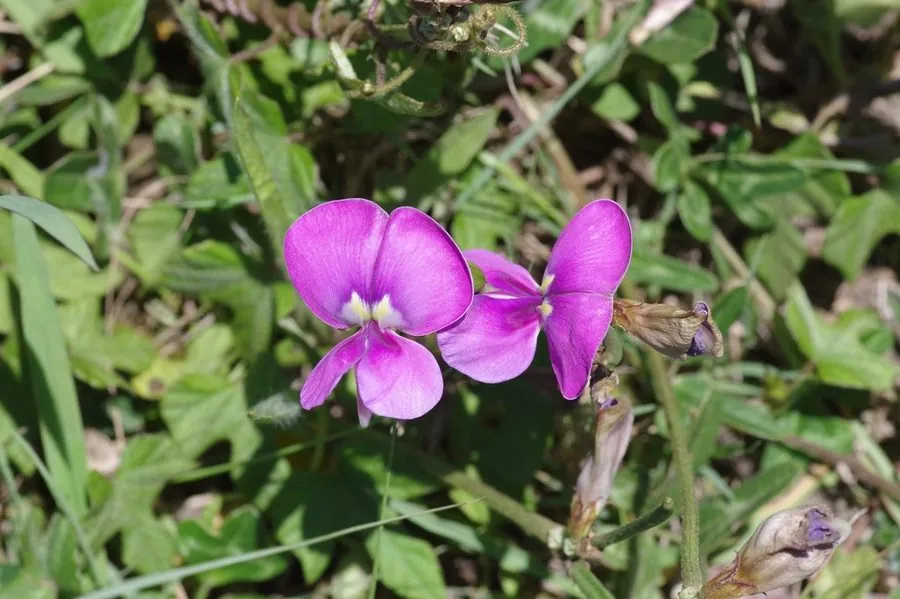

农作物与经济植物 · 植物界
豇豆 Vigna unguiculata

豇豆的嫩荚细长柔嫩，是夏季常见的蔬菜，籽粒也可煮食，既耐热又耐旱，是重要的豆类蔬菜作物之一。
- 分类
- 门被子植物门纲双子叶植物纲目豆目科豆科属豇豆属
- 栖息环境
- 温带与热带的平原菜地，喜温暖、耐热耐旱，不耐霜冻
- 地理分布
- 原产非洲，现中国、印度、非洲等地广泛栽培
- 保护级别
- 暂无评估（栽培作物）
物种志
豇豆是一年生草本，株高因品种而异，有矮生和蔓生两类，蔓生品种可攀援 2–3 m。叶片为三出复叶，小叶卵形。花淡紫色或黄白色，蝶形。荚果细长，长 20–60 cm，内含 10–20 粒种子，种子肾形，有红、白、黑等色。根系有根瘤，能固氮。
豇豆原产非洲，后经印度传入中国，栽培历史已有 1000 多年，是广泛栽培的豆类蔬菜。它喜温暖、耐热，不耐霜冻，耐旱性较强，适合在夏季种植。嫩荚可炒食、凉拌、腌制或晒干，口感脆嫩；成熟种子可煮粥、制豆沙，也可作饲料。豇豆富含蛋白质、膳食纤维和维生素，是夏季重要的蔬菜。中国长江流域及以南地区种植广泛，北方也有栽培。
形态与习性
- 株型矮生或蔓生，蔓生可攀援 2–3 m
- 荚果细长，长 20–60 cm
- 种子肾形，有红、白、黑等色
- 用途嫩荚炒食、腌制、晒干
- 特性耐热耐旱，根瘤固氮
- 季节夏季常见的豆类蔬菜
趣味知识
- 豇豆的嫩荚又细又长，常见的有 20–60 cm 长。
- 豇豆耐热耐旱，是夏季菜园里的当家豆类蔬菜。
- 豇豆的根上长有根瘤，能固氮养地。